|
fotos de animales silvestres de
ARGENTINA |
 |
||
photos of wild animals of ARGENTINA |
||||
|
fotos de animales silvestres de
ARGENTINA |
|
||
photos of wild animals of ARGENTINA |
||||

|
Mamíferos
/ Mammals
Página Principal / Main Page |
|
|
Bienvenido a esta
página bilingue (Español - Inglés)
Welcome to this bilingual (English/Spanish) website. English text (in green)
follows below the Spanish
|
Español
|
| Esta sección
contiene fotos que he logrado de diversos mamíferos nativos de
Argentina, la mayoría en estado silvestre. Incluye 231 fotos abarcando 69 especies silvestres (abarca también especies introducidas desde otros continentes) Existe una gran cantidad de otras especies de mamíferos silvestres en Argentina (son más de 370 especies distintas). Algunas son difíciles de observar y fotografiar, otras son muy raras y muchas son nocturnas, por lo cual no he logrado aún hacerles foto, aunque he incluido fotos de algunas especies nocturnas atropelladas en la ruta. |
| CONSERVACION:
Prácticamente todas las especies de mamíferos estan en disminución, principalmente por la transformación de los ambientes silvestres hacia usos productivos (agricultura, forestación, pesca) y otros problemas ocasionados por la expansión humana: desmonte, cacería, muertes en rutas, envenenamientos, etc. En el año 2003 se contabilizan unas 62 especies que se encuentran amenazadas de extinción, pero sin duda muchas otras ya cuentan con poblaciones reducidas y fragmentadas. Los desmontes, los cultivos, las autopistas - las ciudades mismas - eliminan los habitats silvestres, únicos espacios en donde estos animales pueden vivir y procrear. Al producirse la fragmentación de poblaciones, esto impide el cruce genético entre los grupos, aislandolos, lo cual aumenta el peligro de extinciones locales y eventualmente la extinción definitiva de la especie a nivel global. Muchas especies ya no se encuentran en amplísimas zonas que alguna vez, hace no tantos años, formaba parte de su area de distribución original. |
| Por eso es importante: NO destruir los pocos espacios silvestres que aún quedan en pie en nuestro rincón del mundo. ¡NO cazar! NO comprar mascotas, salvo los conocidos animales domésticos: perro, gato, y punto! Pretender "CUIDAR" un mono, un zorrino o un gato montés en tu casa es una falacia: primero implica la segura muerte de sus padres (es que al comprar la entrañable criatura, nadie nos cuenta cómo se realizó la captura de la cria!). Segundo, por las enfermedades: tanto las que puede contraer el animal en cautiverio, como las que pueden ser transmitidas a humanos. Así también al crecer brotará un carácter feróz que obligará a sacrificarlo, al ser totalmente inmanejable en un hogar. Muchos acuden entonces a la pésima idea de liberar el animal en "la reserva ecológica más cercana a su domicilio", pensando que hace un bien. Pero es muy probable que el animal provino de otro hábitat, quizás a mil kilómetros de distancia. Liberar un animal silvestre en estas condiciones puede causar un gran daño. En el mejor de los casos el animal no podrá sobrevivir y morirá. Pero en caso que pueda sobrevivir es impredecible el daño que puede causar a las poblaciones silvestres, ya que se trata de un animal que el resto de la fauna no conoce y contra el cual no ha desarrollado defensas. Asi, un único individuo puede provocar una pesadilla: el contagio de enfermedades a la fauna silvestre, la exterminación de ciertas especies, o la cruza con variedades semejantes, generando híbridos inviables. Compando fauna silvestre es un engaño que lleva esos animales a la extinción y solo beneficia al comerciante mientras dure la "bonanza", ya que eventualmente terminará agotando la misma fauna que capturaba. Claramente es una actividad NO SUSTENTABLE. |
|
English
|
| This
section contains my own photos of some wild mammals of Argentina, photographed mostly in the wild. Currently there are 231 photos covering 69 species. Argentina has about 370 different mammal species. Some are difficult to see and photograph, others are rare and many are nocturnal. In such cases I simply have not been lucky enough to see them, but in some cases I have photos of roadkill. |
| CONSERVATION:
The populations of most mammal species are diminishing, mainly due to transformation of wild habitats and other problems caused by the expansion of the human population: deforestation, hunting, roadkill, poisoning, etc. In the year 2003 some 62 species of mammals of Argentina are threatened with extiction, but doubtlessly many others now have very reduced and fragmented populations. Land clearing, crops, highways - even cities - result in the elimination of wild habitats, which are the only places in which these animals can survive. As populations become fragmented there is no chance of genetic exchange between the isolated groups, leading to high risk of local extinction and eventually global extermination. Many species of Argentina are no longer found in vast parts of their original ranges, where they might still have been found only a few years back. |
| That
is why it is important: NOT to destroy the last remaining wilderness areas of your corner of the world. NOT to hunt! NOT to purchase wild animals as pets: just keep dogs and cats. The idea of keeping a monkey or skunk at home is a fallacy, for it is not sustainable, it does not allow the species to reproduce, and can be dangerous to the owners as well as the pets you had intended to lovingly care for. Risk of deseases, fierce character, the fate of the parents of the baby pet (often killed in the process of capturing the young) all contribute to increasing the conservation problems of the speices. Keeping the pet as a "test" is also a fallacy, for the little creature cannot be returned to the wild as it is not adapted, the exact location of capture would have to be known, and even worse: there is a high risk than on freeing it may spread desease to the wild population, to exterminate other species not prepared to fend off the new invader, or to hibridize with local variants, diluting the gene pool and perhaps also favoring extinction. Purchasing wildlife is only going to benefit the dealer, and only while his "bonanza" lasts, as he will soon deplete the wild populations. Clearly this activity is NON SUSTAINABLE |
INSTRUCCIONES: Marcá
sobre las fotos para ir a la página correspondiente a cada orden
INSTRUCTIONS: Click on the photos to go to the respective pages
TODAS
LAS FOTOS DE ESTE SITIO WEB SON POR A. EARNSHAW
ALL PHOTOS IN THIS WEBSITE TAKEN BY A. EARNSHAW
(c) Alec Earnshaw 1992-2020
|
Orden / Order
|
Comprende / Includes
|
|
|
|
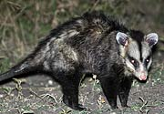 |
Comadrejas Opossums |
FAM. DIDELPHIDAE: (comadrejas) - Comadreja Overa (Picaza) (5) - Comadreja Colorada (1) |
FAM.
DIDELPHIDAE: (opossums) - White-eared Opossum (5) - Thick-tailed Opossum (1) |
|
Orden / Order
|
Comprende / Includes
|
|
|
|
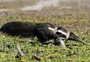 |
Oso Hormiguero, Tamanduás, Perezosos Anteaters, Sloths |
FAM.
MYRMECOPHAGIDAE (osos hormigueros): - Oso Hormiguero (2) |
FAM.
MYRMECOPHAGIDAE (ant eaters): - Giant Anteater (2) |
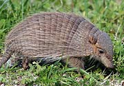 |
Armadillos, Mulitas, Peludos Armadillos |
FAM. DASYPODIDAE (peludos, piches): - Peludo (1) - Piche llorón (4) - Piche Patagónico (2) - Quirquincho Bola (1) - Mulita pampeana (4) - Mulita Grande (2) (1 muerta) |
FAM. DASYPODIDAE (armadillos): - Larger Hairy Armadillo (1) - Litte (or Small) Hairy Armadillo (4) - Pichi Armadillo (2) - Southern Three-banded Armadillo (1) - Southern lesser long-nosed armadillo (4) - Common Long-nosed (Nine-banded) Armadillo (2) |
|
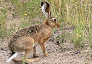 |
Conejos,
Liebres Rabbits, Hares |
FAM.
LEPORIDAE (liebres, conejos): - Conejo Tapetí (1) - Conejo Europeo (7) [INTRODUCIDA] - Liebre Europea (6) [INTRODUCIDA] |
FAM. LEPORIDAE (hares, rabbits): - Tapeti Rabbit (1) - European Rabbit (7) [INTRODUCED] - European Hare (6) [INTRODUCED] |
|
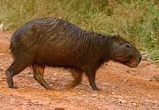 |
Roedores
Rodents |
FAM. SCIURIDAE (ardillas): |
FAM.
SCIURIDAE (squirrels): - Brazilian (or Olive-colored) squirrel (3) - Bolivian squirrel (2) AM. CAVIIDAE (cavies, maras): - Pampas Cavy (7) - Lowland Yellow-toothed Cavy (1) - Least (or Patagonian Lesser) Cavy (4) - Chacoan Mara (1) - Mara or Patagonian Hare (3) FAM. MURIDA (rats, mice): - Roof Rat (4) [INTRODUCED] - House Mouse (3) [INTRODUCED] FAM. CRICETIDAE (New World rats & mice): - Web-footed Marsh Rat (1) - Azara's Grass Mouse (2) FAM. CTENOMYIDAE: - Talas Tuco-tuco (2) - Andean Tuco-tuco (2) FAM. CHINCHILLIDAE (vizcachas, chinchillas): - Plains Viscacha (5) - Mountain Viscacha (1) FAM. DASYPRODACTIDAE (Agoutís): - Azaras agouti (2) FAM. MYOCASTORIDAE (Beavers): - Coypu (12) - Beaver (6) [INTRODUCED] FAM. HYDROCHAERIDAE (capybaras): - Capybara (12) |
|
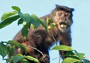 |
Primates
Primates |
FAM. CEBIDAE: |
FAM. CEBIDAE: - Tufted capuchin monkey (2) - Azara's capuchin (1) - Azara's Night Monkey (2) - Black howler monkey (3) - Southern brown howler monkey (4) |
|
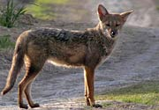 |
Carnívoros
|
FAM.
CANIDAE (zorros, canes): |
FAM. CANIDAE (foxes, etc.): - Argentine Gray Fox (7) - Andean Fox (6) - Crab-eating fox / common fox / forrest fox (4) - Maned Wolf (2) [CAPTIVE] FAM. MUSTELIDAE (ferrets, skunks): - Neotropical Otter (1) - Southern Grison (1) - Molina's hog-nosed skunk (5) - Patagonian Skunk (subspecies of above) (1) FAM. FELIDAE (wild cats): - Geoffroy's Cat (road kill) - Puma = Mountain Lion (2 - captive) - Jaguar (1) [CAPTIVE] FAM. PROCYONIDAE (raccoons): - Ring-tailed (or south american) Coati (-mundi) (3) - Crab-eating raccoon (2) |
|
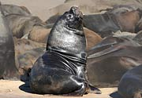 |
Pinípedos
Pinnipeds |
FAM. OTARIIDAE (lobos marinos): - Lobos Marinos (de 1 y 2 pelos) (5) - Lobo marino de un pelo sudamericano (6) - Lobo marino de dos pelos subantártico (4) FAM. PHOSIDAE (elefantes marinos, focas): - Elefante Marino (4) |
FAM. OTARIIDAE (sea lions, fur seals):
- Sea lions and fur seals (5) - South american sea lion (6) - Amsterdam Island fur seal (4) FAM. PHOSIDAE (true seals): - Southern Elephant Seal (4) |
|
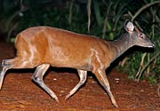 |
Ungulados
Paridigitales Even-Toed Ungulates |
FAM.
CAMELIDAE: |
FAM. CAMELIDAE: |
| Ungulados
Imparadigitales (Tapires, caballos) Odd-toed Ungulates (Tapirs, Horses) |
FAM. TAPIRIDAE (tapires): - Tapir (2, juvenil y huella) |
FAM. TAPIRIDAE (tapirs): - Lowland (or S. American) Tapir (2, juvenile and footprint) |
|
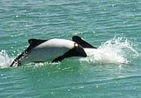 |
Cetáceos Whales & Dolphins |
FAM.
PONTOPORIIDAE: - Franciscana (o Delfín del Plata) (3) FAM. DELPHINIDAE: - Delfín Austral (3) - Tonina Overa (1) - Delfín Piloto o Ballena Piloto (1 - muerta) |
FAM.
PONTOPORIIDAE: - La Plata river dolphin (3) FAM. DELPHINIIDAE: - Peale's Dolphin (3) - Commerson's Dolphin (1) - Long-finned Pilot Whale (1 - dead) |
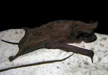 |
Murciélagos Bats |
FAM.
MOLOSSIDAE: - Murciélago Cola de Ratón (1) - Moloso Orejas Anchas Pardo (1) |
FAM.
MOLOSSIDAE (Free-tailed bats): |
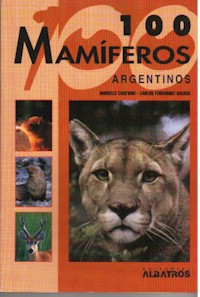 |
100
Mamíferos Argentinos [Parte de la colección de flora y fauna de Argentina que incluye: 100 Caracoles, 100 Arboles, 100 Aves, etc.] Autores: Marcelo Canevari y Carlos Fernández Balboa Coodrinador de la colección: Tito Narosky Una excelente guía de especies para el aficionado de vida silvestre y para todo aquel que quiera conocer lo escencial de las especies de mamíferos más comunes y conocidas de la Argentina. Para cada especie se incluyen fotos, mapas de distribución, silueta de la huella, estatus de conservación, medidas, y un texto que describe la especie comentando interesantes apuntes acerca de su observación, hábitos, aspectos culturales, etc. Hay una introducción para cada familia. El libro contiene un resumen de conceptos básicos y anatomía de los mamíferos, una reseña histórica sobre quienes los estudiaron, los mamíferos introducidos, la conservación de los mamíferos, bibliografía e índice. El prólogo es por el destacado conservacionista Claudio Bertonatti. En Español. Editorial Albatros - ISBN: 950-24-1010-6 Recomandación: EXCELENTE +++++ Debería integrar todas las bibliotecas escolares del país y ser leido por maestros que tocan el tema de fauna argentina. |